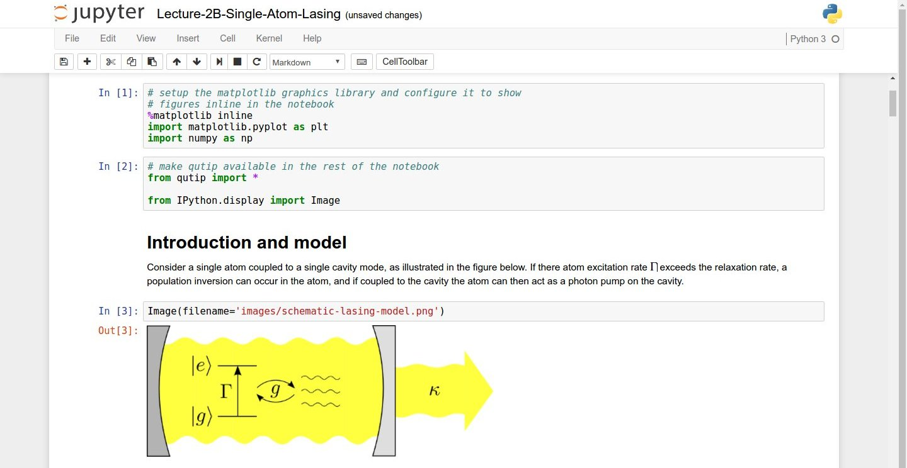

Running and Quitting
Overview
Teaching: 15 min
Exercises: 0 minQuestions
How can I run Python programs?
Objectives
Launch the Jupyter Notebook, create new notebooks, and exit the Notebook.
Create Markdown cells in a notebook.
Create and run Python cells in a notebook.
Python programs are plain text files.
- They have the
.pyextension to let everyone (including the operating system) know it is a Python program.- This is convention, not a requirement.
- It’s common to write them using a text editor but we are going to use the Jupyter Notebook.
- The bit of extra setup is well worth it because the Notebook provides code completion and other helpful features.
- Notebook files have the extension
.ipynbto distinguish them from plain-text Python programs.- Can export as “pure Python” to run from the command line.
Use the Jupyter Notebook for editing and running Python.
- The Anaconda package manager is an automated way to install the Jupyter notebook.
- See the setup instructions for Anaconda installation instructions.
- It also installs all the extra libraries it needs to run.
-
Once you have installed Python and the Jupyter Notebook requirements, open a shell and type:
$ jupyter notebook - This will start a Jupyter Notebook server and open your default web browser.
- The server runs locally on your machine only and does not use an internet connection.
- The server sends messages to your browser.
- The server does the work and the web browser renders the notebook.
- You can type code into the browser and see the result when the web page talks to the server.
- This has several advantages:
- You can easily type, edit, and copy and paste blocks of code.
- Tab complete allows you to easily access the names of things you are using and learn more about them.
- It allows you to annotate your code with links, different sized text, bullets, etc. to make it more accessible to you and your collaborators.
- It allows you to display figures next to the code that produces them to tell a complete story of the analysis.

Screenshot of a Jupyter Notebook on quantum mechanics by Robert Johansson
How It’s Stored
- The notebook file is stored in a format called JSON.
- Just like a webpage, what’s saved looks different from what you see in your browser.
- But this format allows Jupyter to mix source code, text, and images, all in one file.
The Notebook has Command and Edit modes.
- Open a new notebook from the dropdown menu (that says ‘New’) in the top right corner of the file browser page.
- Each notebook contains one or more cells that contain code, text, or images.
Code vs. Text
We often use the term “code” to mean “the source code of software written in a language such as Python”. A “code cell” in a Notebook is a cell that contains software; a “text cell” is one that contains ordinary prose written for human beings.
- If you press “esc” and “return” alternately,
the outer border of your code cell will change from gray/blue to green.
- The difference in color is subtle.
- These are the command (gray) and edit (green) modes of your notebook.
- In command mode, pressing the “H” key will provide a list of all the shortcut keys.
- Command mode alows you to edit notebook-level features, and edit mode changes the content of cells.
- When in command mode (esc/gray),
- The “B” key will make a new cell below the currently selected cell.
- The “A” key will make one above.
- The “X” key will delete the current cell.
- The “Z” key will undo your last cell deletion.
- All actions can be done using the menus, but there are lots of keyboard shortcuts to speed things up.
- If you remember the “esc” and “H” shortcut, you will be able to find out all the rest.
Command Vs. Edit
In the Jupyter notebook page are you currently in command or edit mode?
Switch between the modes. Use the shortcuts to generate a new cell. Use the shortcuts to delete a cellSolution
Command mode has a grey border and Edit mode has a green border. Use “esc” and “Enter” to switch between modes. You need to be in command mode (Hit “esc” if your cell is green). Type “B” or “A”. You need to be in command mode (Hit “esc” if your cell is green). Type “X”.
Use the keyboard and mouse to select and edit cells.
- Pressing the “return” key turns the border green and engages edit mode, which allows you to type within the cell.
- Because we want to be able to write many lines of code in a single cell, pressing the “return” key when in edit mode (green) moves the cursor to the next line in the cell just like in a text editor.
- We need some other way to tell the Notebook we want to run what’s in the cell.
- Pressing the “shift” and the “enter” key together will execute the contents of the cell.
- Notice that the “return” and “shift” keys on the right of the keyboard are right next to each other.
The Notebook will turn Markdown into pretty-printed documentation.
- Notebooks can also render Markdown.
- A simple plain-text format for writing lists, links, and other things that might go into a web page.
- Equivalently, a subset of HTML that looks like what you’d send in an old-fashioned email.
- Turn the current cell into a Markdown cell by entering the command mode (esc/gray) and press the “M” key.
In [ ]:will disappear to show it is no longer a code cell and you will be able to write in Markdown.- Turn the current cell into a Code cell by entering the command mode (esc/gray) and press the “Y” key.
Markdown does most of what HTML does.
* Use asterisks
* to create
* bullet lists.
- Use asterisks
- to create
- bullet lists.
1. Use numbers
1. to create
1. numbered lists.
- Use numbers
- to create
- numbered lists.
* You can use indents
* To create sublists
* of the same type
* Or sublists
1. Of different
1. types
- You can use indents
- To create sublists
- of the same type
- Or sublists
- Of different
- types
# A Level-1 Heading
A Level-1 Heading
## A Level-2 Heading (etc.)
A Level-2 Heading (etc.)
Line breaks
don't matter.
But blank lines
create new paragraphs.
Line breaks don’t matter.
But blank lines create new paragraphs.
[Create links](http://software-carpentry.org) with `[...](...)`.
Or use [named links][data_carpentry].
[data_carpentry]: http://datacarpentry.org
Create links with [...](...).
Or use named links.
Creating Lists in Markdown
Create a nested list in a Markdown cell in a notebook that looks like this:
- Get funding.
- Do work.
- Design experiment.
- Collect data.
- Analyze.
- Write up.
- Publish.
Solution
This challenge integrates both the numbered list and bullet list. Note that the bullet list is indented 2 spaces so that it is inline with the items of the numbered list.
1. Get funding. 2. Do work. * Design experiment. * Collect data. * Analyze. 3. Write up. 4. Publish.
More Math
What is displayed when a Python cell in a notebook that contains several calculations is executed? For example, what happens when this cell is executed?
7 * 3 2 + 1Solution
Python returns the output of the last calculation.
3
Change an Existing Cell from Code to Markdown
What happens if you write some Python in a code cell and then you switch it to a Markdown cell? For example, put the following in a code cell:
x = 6 * 7 + 12 print(x)And then run it with shift+return to be sure that it works as a code cell. Now go back to the cell and use escape+M to switch the cell to Markdown and “run” it with shift+return. What happened and how might this be useful?
Solution
The Python code gets treated like markdown text. The lines appear as if they are part of one contiguous paragraph. This could be useful to temporarily turn on and off cells in notebooks that get used for multiple purposes.
x = 6 * 7 + 12 print(x)
Equations
Standard Markdown (such as we’re using for these notes) won’t render equations, but the Notebook will. Create a new Markdown cell and enter the following:
$\sum_{i=1}^{N} 2^{-i} \approx 1$(It’s probably easier to copy and paste.) What does it display? What do you think the underscore,
_, circumflex,^, and dollar sign,$, do?Solution
The notebook shows the equation as it would be rendered from latex equation syntax. The dollar sign,
$, is used to tell markdown that the text in between is a latex equation. If you’re not familiar with latex, underscore,_, is used for subscripts and circumflex,^, is used for superscripts. A pair of curly braces,{and}, is used to group text together so that the statementi=1becomes the the subscript andNbecomes the superscript. Similarly,-iis in curly braces to make the whole statement the superscript for2.\sumand\approxare latex commands for “sum over” and “approximate” symbols.
Key Points
Python programs are plain text files.
Use the Jupyter Notebook for editing and running Python.
The Notebook has Command and Edit modes.
Use the keyboard and mouse to select and edit cells.
The Notebook will turn Markdown into pretty-printed documentation.
Markdown does most of what HTML does.